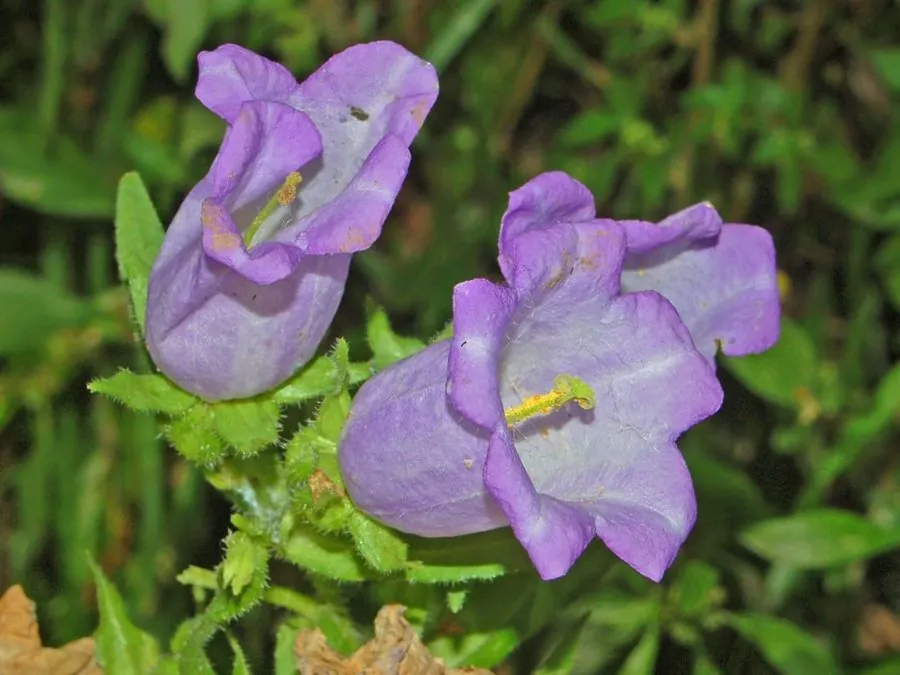

花卉与草本 · 植物界
风铃草 Campanula medium

桔梗科二年生草本，钟形花朵成串垂挂，风吹时似铃铛摇曳，是花境中富有野趣的竖线条花卉，原产南欧。
- 分类
- 门被子植物门纲木兰纲目菊目科桔梗科属风铃草属
- 栖息环境
- 南欧的岩石坡地与林缘，喜凉爽、阳光充足、排水良好
- 地理分布
- 原产欧洲南部，现世界温带地区广泛栽培，中国庭园有引种
- 保护级别
- 暂无评估
物种志
风铃草为桔梗科风铃草属二年生草本，株高 60–100 厘米，茎直立，全株被粗毛。叶片披针形至卵形，基生叶有长柄。总状花序顶生，花冠钟形或杯形，长 4–5 厘米，有蓝紫、粉、白等色，花冠 5 裂，花期 5–6 月；果实为蒴果，成熟后自顶部开裂。
风铃草原产欧洲南部意大利一带，喜凉爽、阳光充足和排水良好的环境，耐寒而不耐高温高湿，常作二年生栽培，第一年长叶、第二年开花。它的钟形花朵沿茎成串排列，风吹时轻轻摇曳，宛如铃铛，因此得名；英文名意为“坎特伯雷的钟”。风铃草是花境和庭院中优良的竖线条材料，也可作切花，栽培以秋播为主。
形态与习性
- 株高60–100 厘米，全株被粗毛
- 花期5–6 月，钟形花成串开放
- 果期花后结蒴果
- 光照喜充足阳光，夏季需适当遮阴
- 水分喜湿润，忌积水
- 土壤疏松、排水良好的石灰质壤土
- 繁殖以秋播为主
- 主要用途花境、庭院点缀、切花
趣味知识
- 风铃草的钟形花朵成串垂挂，风吹时摇曳如铃，因此得名。
- 它是二年生植物，第一年只长叶，第二年才抽葶开花。
- 英文名意为“坎特伯雷的钟”，在欧洲庭园栽培历史悠久。
- 花冠顶端 5 裂，裂片向外翻卷，是识别风铃草的标志。